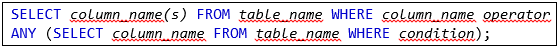

Any ve All operatörleri, tek bir sütun değeri ile bir dizi başka değer arasında karşılaştırma yapmanıza olanak
tanır.
ANY : Alt sorgu değerlerinden herhangi biri koşulu karşılıyorsa TRUE değerini döndürür. İşlemin
aralıktaki değerlerden herhangi biri için doğru olması durumunda koşulun doğru olacağı anlamına gelir.

ALL : Alt sorgu değerlerinin tümü koşulu karşılıyorsa TRUE değerini döndürür. SELECT, WHERE ve
HAVING ifadeleriyle birlikte kullanılır. ALL, koşulun yalnızca işlemin aralıktaki tüm değerler için doğru olması
durumunda doğru olacağı anlamına gelir.